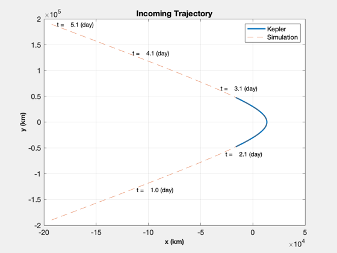
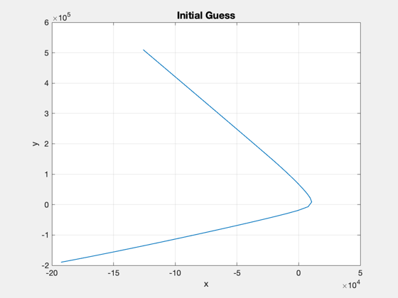
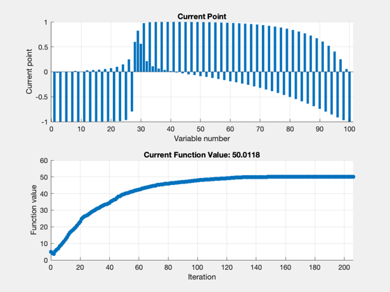
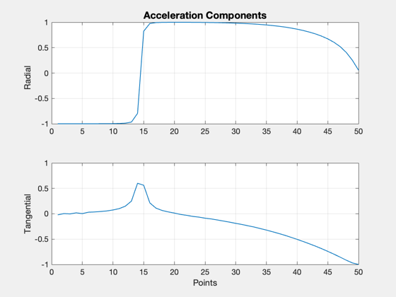
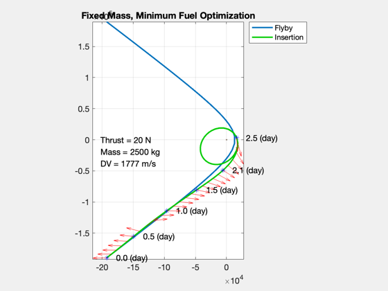
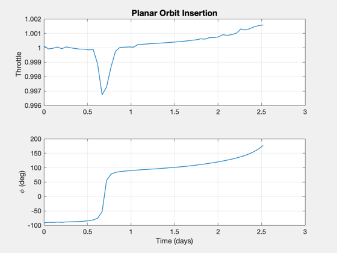
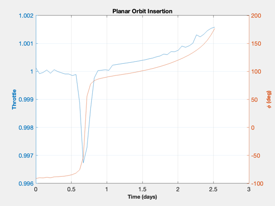
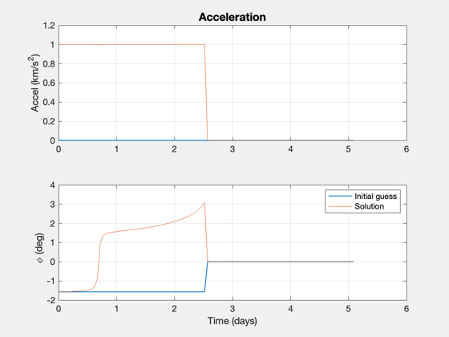

Contents
Simulate an optimal approach and orbit insertion at Mars (fmincon)
Treat the problem as planar. Models a fixed mass. fmincon is used to find the optimal trajectory. This optimization is on the slow side and may take several hundred iterations. If the thrust isn't high enough for the time given, the acceleration will be maxed out - ones all the time - and there will be a large error. When the thrust is more than enough, there will be a coast period. The cost function will first increase until it plateaus and then taper off to the final solution.
Parameter space:
0. Mass/thrust of the spacecraft 1. how long a time is allocated for the insertion burn (fTime) 2. the number of points along the trajectory 3. number of optimization iterations, or tolerances
Example solutions: 3500 kg / 40 or 20 N / fTime = 3 - coast time in trajectory 3000 kg / 15 N / 3 Note: lower thrust may require less mass, more points
The cost, f(x), is the total acceleration required for the maneuver. The constraints, or Feasibility, are that the acceleration magnitude is less than the maximum and that the final state is achieved at the endpoint.
Example output: First-order Norm of Iter F-count f(x) Feasibility optimality step 271 56026 8.140240e+01 5.301e-12 8.410e-01 3.252e-03
------------------------------------------------------------------------ See also ApproachCost2DMag, ApproachConst2DIneq, Simulate2DApproach ------------------------------------------------------------------------
%-------------------------------------------------------------------------- % Copyright (c) 2016 Princeton Satellite Systems, Inc. % All rights reserved. %-------------------------------------------------------------------------- % Since 2017.1 %-------------------------------------------------------------------------- Watermark([1 1 1]); % for plot inversion if( ~HasOptimizationToolbox ) error('You need the MATLAB optimizaton toolbox to run this script.'); end
Problem parameters
Optimization parameters
maxIter = 500; fTime = 5; % factor times the impulse time for executing burn nPts = 100; % 100 pts % Spacecraft parameters mass = 2500; % fixed mass (kg) thrust = 20; % fixed thrust (N) % Target orbit parameters h = 10000; % apogee hC = 5000; % perigee
Setup
Constants
rE = Constant('equatorial radius mars'); mu = Constant('mu mars'); aMax = thrust*0.001/mass; % km/s2 % Calculate target orbit [sma,ecc] = RPRA2AE(rE+hC,rE+h); vEll = VOrbit(rE+h,sma,mu); rP = rE + h; % r of passage % Encounter velocity (incoming trajectory) vEsc = VEscape( rP, mu ); vEnc = 1.06*vEsc; % magic number: 1.06 vInf = sqrt(vEnc.^2 - vEsc^2); % v-infinity % units??? % Change from encounter velocity to apogee - instantaneous burn dV = vEnc-vEll; % Approx time to do delta-V at our fixed thrust level impT = dV*mass*1000/thrust; dVTime = fTime*impT; % Generate incoming trajectory orbital elements (hyperbola) via Kepler smaP = -mu/vInf^2; eccP = 1 - rP/smaP; f = 0.76*acos(-1/eccP); m = Nu2M(eccP,f); m = linspace(-m,m); r = zeros(3,100); for j = 1:length(m) el = [smaP 0 0 0 eccP m(j)]; r(:,j) = El2RV( el, [], mu ); end % Plot the flyby (if no delta-V is applied) NewFig('Mars flyby') plot(r(1,:),r(2,:),'linewidth',2); hold on grid on XLabelS('x (km)'); YLabelS('y (km)'); title('Incoming Trajectory') % Compute the true anomaly to reach target anomaly in dVTime time fTarget = 0.0; f0 = TrueAnomalyStartHyperbola(smaP,eccP,dVTime,fTarget,mu); t = linspace(0,TimeOfFlightHyperbola(smaP,eccP,-f0,f0,mu),nPts); %nPts = length(t); m0 = Nu2M( eccP,f0 ); [r, v] = El2RV( [smaP 0 0 0 eccP m0], [], mu ); % Convert velocity to planar coordinates (u,v) uR = Unit(r); uT = Cross([0;0;1],uR); u = Dot(uR,v); v = Dot(uT,v); % Initial condition x0 = [Mag(r);u;v;atan2(r(2),r(1))]; % Verify the simulation for zero acceleration acc = zeros(1,length(t)); % acceleration phi = zeros(1,length(t)); % thrust angle d.mu = mu; d.aMax = aMax; xZ = Simulate2DApproach( t, x0, phi, acc, d ); plot(xZ(1,:),xZ(2,:),'--'); m = nPts/5; j = [1:m:nPts nPts]; [tS,~,tU] = TimeLabl(t); for k = 2:length(j) i = j(k); s = sprintf(' t = %6.1f (%s)',tS(i),tU); text(xZ(1,i),xZ(2,i),s); end legend('Kepler','Simulation') drawnow
2622.2
3038.2
3405.6
 Set up the powered orbit insertion optimization
The goal is to achieve the insertion orbit at the end of the burn. The cost is the total acceleration.
% Target condition: elliptical orbital velocity at rP xF = [rP;0;vEll]; % Step at which you should be at xF nF = length(t)/2; opts = optimset( 'Display','iter-detailed',... 'maxiter',maxIter,... 'algorithm','interior-point',... 'TolFun',1e-2,... 'TolCon',0.1,... 'TolX',1e-4,... 'PlotFcns',{@optimplotx,@optimplotfval},... 'MaxFunEvals',300000); costFun = @(u) ApproachCost2DMag(u); constFun = @(u) ApproachConst2DIneq(u,d,t(1:nF),x0,xF); % Lower and upper bounds oN = ones(1,nF); lB = [-1*oN; -1*oN]; uB = [oN; oN]; % Initial solution: start with negative radial thrust to avoid a swingby of % the planet, which confuses the simulation. acc0 = oN; u0 = [-oN;0*oN]; % [radial;tangential] %Plot2D(1:nF,u0,'Points',{'Radial','Tangential'},'Initial Acceleration') phi0 = atan2(u0(1,:),u0(2,:)); traj0 = Simulate2DApproach( t, x0, [phi0 0*oN], [acc0 0*oN], d ); Plot2D(traj0(1,:),traj0(2,:),'x','y','Initial Guess') drawnow
3767.3
2183.8
1583.1
2331.3
 Run fmincon to calculate the optimal decision variables
tic [u,fval,eflag,output] = fmincon(costFun,u0,[],[],[],[],lB,uB,constFun,opts); toc u(abs(u)<1e-3) = 0; Plot2D(1:nF,u,'Points',{'Radial','Tangential'},'Acceleration Components')
Initial point X0 is not between bounds LB and UB;
FMINCON shifted X0 to strictly satisfy the bounds.
First-order Norm of
Iter F-count f(x) Feasibility optimality step
0 101 5.000000e+00 1.292e+00 9.846e-01
1 205 4.169370e+00 1.236e+00 1.303e+00 4.729e-01
2 311 3.599654e+00 6.233e-01 7.618e-01 4.766e-01
3 414 5.387138e+00 5.997e-01 1.320e+00 4.712e-01
4 518 6.200861e+00 5.878e-01 1.692e+00 2.390e-01
5 622 7.097613e+00 5.764e-01 2.000e+00 2.302e-01
6 726 8.188928e+00 5.636e-01 2.183e+00 2.626e-01
7 830 9.137551e+00 5.526e-01 2.301e+00 2.299e-01
8 934 1.007246e+01 5.424e-01 2.452e+00 2.173e-01
9 1038 1.113151e+01 5.313e-01 2.583e+00 2.345e-01
10 1142 1.238498e+01 5.191e-01 2.817e+00 2.583e-01
11 1246 1.371949e+01 5.066e-01 2.658e+00 2.721e-01
12 1350 1.516538e+01 4.937e-01 3.011e+00 2.905e-01
13 1454 1.630929e+01 4.829e-01 3.193e+00 2.477e-01
14 1558 1.723449e+01 4.743e-01 3.233e+00 2.048e-01
15 1662 1.805249e+01 4.670e-01 3.127e+00 1.728e-01
16 1766 1.889414e+01 4.592e-01 3.403e+00 1.846e-01
17 1870 1.977402e+01 4.514e-01 3.630e+00 2.010e-01
18 1974 2.086238e+01 4.419e-01 3.629e+00 2.719e-01
19 2078 2.206784e+01 4.318e-01 3.961e+00 2.994e-01
20 2182 2.316142e+01 4.227e-01 4.073e+00 2.808e-01
21 2287 2.468477e+01 3.294e-01 7.886e-01 5.813e-01
22 2391 2.556669e+01 3.248e-01 9.498e-01 1.689e-01
23 2495 2.614306e+01 3.220e-01 1.279e+00 1.183e-01
24 2599 2.655537e+01 3.199e-01 1.244e+00 9.224e-02
25 2703 2.702717e+01 3.175e-01 1.474e+00 1.095e-01
26 2807 2.779076e+01 3.142e-01 1.517e+00 1.716e-01
27 2912 2.834568e+01 3.182e-01 7.559e-01 4.114e-01
28 3016 2.902657e+01 3.156e-01 9.882e-01 1.533e-01
29 3120 2.962010e+01 3.135e-01 1.109e+00 1.371e-01
30 3224 3.009797e+01 3.119e-01 1.242e+00 1.088e-01
First-order Norm of
Iter F-count f(x) Feasibility optimality step
31 3328 3.055402e+01 3.105e-01 1.406e+00 1.050e-01
32 3433 3.105960e+01 2.913e-01 7.910e-01 2.146e-01
33 3537 3.156317e+01 2.897e-01 9.302e-01 1.104e-01
34 3641 3.200356e+01 2.884e-01 9.540e-01 9.749e-02
35 3745 3.244882e+01 2.872e-01 1.043e+00 1.083e-01
36 3849 3.283595e+01 2.862e-01 1.163e+00 8.521e-02
37 3953 3.324563e+01 2.851e-01 1.324e+00 8.992e-02
38 4058 3.363128e+01 3.038e-01 8.813e-01 3.219e-01
39 4162 3.399076e+01 3.028e-01 8.984e-01 7.383e-02
40 4266 3.444281e+01 3.017e-01 1.013e+00 1.040e-01
41 4371 3.520418e+01 2.872e-01 7.406e-01 2.683e-01
42 4475 3.557364e+01 2.863e-01 8.365e-01 8.004e-02
43 4580 3.620645e+01 3.002e-01 7.582e-01 2.664e-01
44 4684 3.655509e+01 2.994e-01 8.269e-01 7.912e-02
45 4789 3.725583e+01 2.864e-01 7.567e-01 2.216e-01
46 4895 3.805658e+01 2.975e-01 7.789e-01 2.394e-01
47 4999 3.838550e+01 2.969e-01 8.378e-01 7.266e-02
48 5104 3.908163e+01 2.851e-01 7.739e-01 2.362e-01
49 5208 3.936452e+01 2.846e-01 7.271e-01 6.101e-02
50 5312 3.963138e+01 2.842e-01 6.997e-01 5.904e-02
51 5418 4.005015e+01 2.944e-01 7.701e-01 1.563e-01
52 5521 4.031362e+01 2.940e-01 6.953e-01 6.253e-02
53 5625 4.047545e+01 2.937e-01 7.129e-01 4.101e-02
54 5730 4.086597e+01 2.840e-01 8.554e-01 1.947e-01
55 5833 4.101501e+01 2.838e-01 8.226e-01 3.504e-02
56 5937 4.118731e+01 2.835e-01 7.703e-01 4.138e-02
57 6042 4.171742e+01 2.922e-01 8.826e-01 2.047e-01
58 6145 4.186797e+01 2.920e-01 8.393e-01 3.678e-02
59 6249 4.202151e+01 2.918e-01 8.154e-01 3.956e-02
60 6354 4.232754e+01 2.821e-01 9.507e-01 2.011e-01
First-order Norm of
Iter F-count f(x) Feasibility optimality step
61 6457 4.245868e+01 2.820e-01 9.052e-01 3.113e-02
62 6562 4.286873e+01 2.901e-01 9.612e-01 1.891e-01
63 6665 4.311288e+01 2.897e-01 8.937e-01 5.707e-02
64 6771 4.333621e+01 2.800e-01 1.010e+00 1.698e-01
65 6874 4.355343e+01 2.797e-01 9.547e-01 5.188e-02
66 6978 4.376084e+01 2.794e-01 8.802e-01 5.426e-02
67 7084 4.409008e+01 2.870e-01 1.020e+00 1.565e-01
68 7187 4.426288e+01 2.867e-01 9.603e-01 4.156e-02
69 7293 4.444768e+01 2.784e-01 1.013e+00 1.318e-01
70 7396 4.461240e+01 2.782e-01 9.715e-01 4.039e-02
71 7500 4.472217e+01 2.780e-01 9.309e-01 3.071e-02
72 7605 4.508963e+01 2.846e-01 9.639e-01 1.882e-01
73 7708 4.523815e+01 2.844e-01 9.046e-01 3.716e-02
74 7812 4.534259e+01 2.843e-01 8.489e-01 3.089e-02
75 7918 4.543415e+01 2.773e-01 9.509e-01 1.518e-01
76 8021 4.553639e+01 2.771e-01 9.311e-01 3.174e-02
77 8125 4.562493e+01 2.770e-01 8.986e-01 2.919e-02
78 8231 4.580450e+01 2.832e-01 8.005e-01 1.304e-01
79 8334 4.588620e+01 2.831e-01 7.592e-01 2.784e-02
80 8440 4.597451e+01 2.769e-01 1.002e+00 1.237e-01
81 8543 4.605234e+01 2.768e-01 9.667e-01 2.647e-02
82 8649 4.623830e+01 2.823e-01 8.651e-01 1.195e-01
83 8752 4.632137e+01 2.822e-01 8.179e-01 2.986e-02
84 8856 4.639222e+01 2.821e-01 7.752e-01 2.661e-02
85 8960 4.647131e+01 2.820e-01 7.354e-01 2.686e-02
86 9066 4.656649e+01 2.765e-01 1.163e+00 1.195e-01
87 9169 4.664428e+01 2.764e-01 1.133e+00 2.768e-02
88 9273 4.670999e+01 2.763e-01 1.094e+00 2.253e-02
89 9379 4.688972e+01 2.813e-01 7.578e-01 1.154e-01
90 9482 4.695984e+01 2.812e-01 7.278e-01 2.663e-02
First-order Norm of
Iter F-count f(x) Feasibility optimality step
91 9586 4.703438e+01 2.812e-01 7.272e-01 2.979e-02
92 9692 4.714224e+01 2.765e-01 1.210e+00 1.130e-01
93 9795 4.721144e+01 2.764e-01 1.184e+00 2.495e-02
94 9901 4.737571e+01 2.808e-01 9.307e-01 1.088e-01
95 10004 4.744068e+01 2.807e-01 8.940e-01 2.490e-02
96 10110 4.753627e+01 2.768e-01 1.053e+00 1.096e-01
97 10213 4.760610e+01 2.768e-01 1.016e+00 2.800e-02
98 10319 4.773497e+01 2.805e-01 9.903e-01 1.084e-01
99 10422 4.779807e+01 2.805e-01 9.535e-01 2.403e-02
100 10527 4.796479e+01 2.769e-01 1.942e+00 1.536e-01
101 10629 4.802265e+01 2.768e-01 1.907e+00 1.680e-02
102 10732 4.812941e+01 2.767e-01 1.869e+00 5.327e-02
103 10839 4.818834e+01 2.802e-01 1.943e+00 1.568e-01
104 10941 4.824722e+01 2.802e-01 1.904e+00 2.437e-02
105 11047 4.831766e+01 2.764e-01 1.699e+00 1.311e-01
106 11151 4.835629e+01 2.763e-01 1.683e+00 1.838e-02
107 11256 4.845137e+01 2.797e-01 1.575e+00 1.305e-01
108 11358 4.849595e+01 2.797e-01 1.542e+00 2.032e-02
109 11464 4.855150e+01 2.767e-01 6.811e-01 1.215e-01
110 11568 4.858286e+01 2.767e-01 6.653e-01 1.436e-02
111 11673 4.869351e+01 2.795e-01 1.817e+00 1.245e-01
112 11776 4.872239e+01 2.795e-01 1.802e+00 1.315e-02
113 11880 4.875436e+01 2.795e-01 1.780e+00 1.579e-02
114 11985 4.884617e+01 2.771e-01 2.574e+00 1.241e-01
115 12089 4.887485e+01 2.770e-01 2.552e+00 1.291e-02
116 12194 4.898081e+01 2.796e-01 1.904e+00 1.091e-01
117 12298 4.900906e+01 2.796e-01 1.892e+00 1.355e-02
118 12403 4.908777e+01 2.773e-01 2.252e+00 1.206e-01
119 12507 4.911404e+01 2.773e-01 2.241e+00 1.225e-02
120 12612 4.920324e+01 2.795e-01 6.225e-01 1.009e-01
First-order Norm of
Iter F-count f(x) Feasibility optimality step
121 12718 4.927401e+01 2.776e-01 2.350e+00 9.762e-02
122 12822 4.930373e+01 2.776e-01 2.336e+00 1.580e-02
123 12927 4.937512e+01 2.794e-01 1.397e+00 9.611e-02
124 13033 4.942881e+01 2.780e-01 1.545e+00 8.707e-02
125 13135 4.951048e+01 2.780e-01 1.513e+00 3.644e-02
126 13239 4.955465e+01 2.779e-01 1.498e+00 2.582e-02
127 13342 4.964179e+01 2.779e-01 1.471e+00 5.809e-02
128 13446 4.967843e+01 2.778e-01 1.435e+00 3.722e-02
129 13550 4.971483e+01 2.778e-01 1.415e+00 3.214e-02
130 13656 4.974259e+01 2.795e-01 1.169e+00 1.013e-01
131 13758 4.977542e+01 2.795e-01 1.160e+00 1.391e-02
132 13861 4.980215e+01 2.794e-01 1.150e+00 3.705e-02
133 13965 4.981857e+01 2.794e-01 1.144e+00 3.102e-02
134 14069 4.982550e+01 2.794e-01 1.139e+00 1.927e-02
135 14173 4.983438e+01 2.794e-01 1.133e+00 2.158e-02
136 14277 4.985222e+01 2.794e-01 1.129e+00 2.951e-02
137 14381 4.986823e+01 2.794e-01 1.123e+00 2.267e-02
138 14485 4.987773e+01 2.794e-01 1.119e+00 1.750e-02
139 14589 4.988938e+01 2.793e-01 1.118e+00 2.577e-02
140 14692 4.990850e+01 2.793e-01 1.114e+00 2.362e-02
141 14795 4.992874e+01 2.793e-01 1.113e+00 3.428e-02
142 14897 4.994836e+01 2.793e-01 1.109e+00 3.711e-02
143 15001 4.995235e+01 2.793e-01 1.108e+00 1.661e-02
144 15107 4.995107e+01 2.777e-01 1.345e+00 7.956e-02
145 15209 4.995379e+01 2.777e-01 1.345e+00 1.984e-03
146 15311 4.995803e+01 2.777e-01 1.345e+00 1.244e-02
147 15414 4.996408e+01 2.777e-01 1.344e+00 2.982e-02
148 15517 4.996749e+01 2.777e-01 1.341e+00 1.632e-02
149 15619 4.997520e+01 2.777e-01 1.342e+00 2.587e-02
150 15723 4.997867e+01 2.777e-01 1.342e+00 1.993e-02
First-order Norm of
Iter F-count f(x) Feasibility optimality step
151 15829 4.997998e+01 2.790e-01 1.040e+00 8.622e-02
152 15930 4.998240e+01 2.790e-01 1.040e+00 1.209e-02
153 16032 4.998411e+01 2.790e-01 1.040e+00 2.932e-02
154 16134 4.998470e+01 2.790e-01 1.040e+00 6.098e-03
155 16236 4.998593e+01 2.790e-01 1.040e+00 7.144e-03
156 16340 4.998716e+01 2.790e-01 1.040e+00 1.247e-02
157 16443 4.999003e+01 2.790e-01 1.040e+00 1.106e-02
158 16547 4.999144e+01 2.790e-01 1.040e+00 1.186e-02
159 16651 4.999320e+01 2.790e-01 1.040e+00 1.018e-02
160 16753 4.999936e+01 2.790e-01 1.039e+00 1.824e-02
161 16856 5.000141e+01 2.790e-01 1.039e+00 1.273e-02
162 16960 5.000235e+01 2.790e-01 1.039e+00 6.591e-03
163 17062 5.000718e+01 2.790e-01 1.040e+00 1.756e-02
164 17171 5.000480e+01 2.786e-01 1.043e+00 4.860e-02
165 17272 5.000089e+01 2.786e-01 1.002e+00 4.584e-02
166 17373 5.000121e+01 2.786e-01 1.002e+00 1.345e-02
167 17475 5.000162e+01 2.786e-01 1.002e+00 1.115e-02
168 17577 5.000241e+01 2.786e-01 1.002e+00 2.082e-02
169 17680 4.999969e+01 2.787e-01 1.002e+00 7.869e-02
170 17783 4.999811e+01 2.786e-01 1.002e+00 5.407e-02
171 17884 4.999869e+01 2.786e-01 1.002e+00 3.640e-02
172 17985 4.999843e+01 2.786e-01 1.002e+00 7.859e-02
173 18087 4.999901e+01 2.786e-01 1.002e+00 3.687e-02
174 18189 4.999791e+01 2.786e-01 1.002e+00 3.242e-02
175 18291 4.999825e+01 2.786e-01 1.002e+00 2.373e-02
176 18392 4.999648e+01 2.787e-01 1.002e+00 4.916e-02
177 18494 4.999686e+01 2.786e-01 1.002e+00 2.397e-02
178 18596 4.999758e+01 2.786e-01 1.002e+00 1.139e-03
179 18699 4.999912e+01 2.786e-01 1.002e+00 9.940e-03
180 18803 4.999952e+01 2.786e-01 1.002e+00 7.650e-03
First-order Norm of
Iter F-count f(x) Feasibility optimality step
181 18905 5.000266e+01 2.786e-01 1.002e+00 1.815e-02
182 19009 5.000342e+01 2.786e-01 1.002e+00 1.295e-02
183 19112 5.000498e+01 2.786e-01 1.002e+00 1.368e-02
184 19215 5.000587e+01 2.786e-01 1.002e+00 1.233e-02
185 19320 5.000516e+01 2.787e-01 1.002e+00 1.762e-02
186 19421 5.000551e+01 2.787e-01 1.002e+00 2.687e-02
187 19523 5.000569e+01 2.787e-01 1.002e+00 1.793e-02
188 19625 5.000574e+01 2.787e-01 1.002e+00 7.851e-03
189 19726 5.000541e+01 2.787e-01 1.002e+00 8.843e-03
190 19829 5.000545e+01 2.787e-01 9.678e-01 7.818e-03
191 19931 5.000572e+01 2.787e-01 9.679e-01 2.200e-04
192 20033 5.001317e+01 2.787e-01 9.681e-01 9.436e-03
193 20141 5.001255e+01 2.787e-01 9.680e-01 3.163e-02
194 20243 5.001282e+01 2.787e-01 9.665e-01 2.460e-02
195 20345 5.001289e+01 2.787e-01 9.673e-01 1.364e-02
196 20446 5.001240e+01 2.787e-01 9.668e-01 1.440e-02
197 20548 5.001249e+01 2.787e-01 9.673e-01 1.479e-02
198 20649 5.001196e+01 2.787e-01 9.666e-01 1.868e-02
199 20751 5.001204e+01 2.787e-01 9.668e-01 1.420e-02
200 20853 5.001205e+01 2.787e-01 9.671e-01 6.782e-03
201 20954 5.001215e+01 2.787e-01 9.677e-01 1.535e-02
202 21055 5.001173e+01 2.787e-01 9.675e-01 1.629e-02
203 21157 5.001180e+01 2.787e-01 9.670e-01 1.307e-02
204 21259 5.001181e+01 2.787e-01 9.505e-01 6.874e-03
205 21361 5.001167e+01 2.787e-01 9.503e-01 8.761e-03
206 21463 5.001178e+01 2.787e-01 9.503e-01 1.962e-04
Optimization stopped because the relative changes in all elements of x are
less than options.StepTolerance = 1.000000e-04, but the relative maximum constraint
violation, 2.157077e-01, exceeds options.ConstraintTolerance = 1.000000e-01.
Consider enabling the interior point method feasibility mode.
Elapsed time is 11.490461 seconds.
  Process the results
phi = [unwrap(atan2(u(1,:),u(2,:))) zeros(1,nPts-nF)]; acc = [Mag(u) zeros(1,nPts-nF)]; [aError, xError] = ApproachConst2DIneq( u, d, t(1:nF), x0, [rP;0;vEll]); x = Simulate2DApproach( t, x0, phi, acc, d ); [aAch, eAch] = RV2AE( [x(1:2,end);0], [x(3:4,end);0], d.mu ); disp('Target Orbit [sma ecc]:') disp([sma ecc]) disp('Orbit Achieved:') disp([aAch eAch]) % Final value of constraints DispWithTitle(xError,'Constraint Error') dVAch = sum(Mag(u))*(t(2)-t(1))*aMax*1000; DispWithTitle(dV*1000,'Impulsive Delta-V (m/s)') DispWithTitle(dVAch,'Low Thrust Delta-V (m/s)') DispWithTitle(dVTime/3600,'Approach Duration (hrs)') % Plot the orbit insertion trajectory NewFig('Trajectory') plot(xZ(1,:),xZ(2,:),'linewidth',2); hold on; plot(x(1,:),x(2,:),'color',[0 0.8 0],'linewidth',2); m = nF/5; j = [1:m:nF nF]; for k = 1:length(j) i = j(k); s = sprintf(' %4.1f (%s)',tS(i),tU); plot(x(1,i),x(2,i),'b*'); text(x(1,i),x(2,i),s,'fontsize',12); end pP = Map('Pluto'); hP = PlotPlanet([0;0;0],pP.radius,pP,true); hold on kQ = [1:2:nF nF]; qs = quiver(x(1,kQ),x(2,kQ),u(1,kQ),u(2,kQ),0.4,'r'); axis equal legend('Flyby', 'Insertion','location','BestOutside'); yA = axis; dY = yA(4)-yA(3); dX = yA(2)-yA(1); text(yA(1)+0.05*dX,0,sprintf('Thrust = %d N',thrust),'fontsize',12); text(yA(1)+0.05*dX,-0.05*dY,sprintf('Mass = %d kg',mass),'fontsize',12); text(yA(1)+0.05*dX,-0.1*dY,sprintf('DV = %3.0f m/s',dVAch),'fontsize',12); title('Fixed Mass, Minimum Fuel Optimization') % Plot the thrust angle and magnitude [tP,tL] = TimeLabl(t); Plot2D(tP(1:nF),[acc(1:nF);phi(1:nF)*180/pi],tL,{'Throttle' '\phi (deg)'},'Planar Orbit Insertion'); PlotDoubleYAxis( tP(1:nF), acc(1:nF), phi(1:nF)*180/pi, tL,... 'Throttle' , '\phi (deg)', 'Planar Orbit Insertion' ); Plot2D(tP,[acc0*aMax zeros(1,nF);phi0 zeros(1,nF)],tL,{'Accel (km/s^2)' '\phi (deg)'},'Acceleration'); subplot(2,1,1) hold on plot(tP,acc) subplot(2,1,2) hold on plot(tP,phi) legend('Initial guess','Solution') if 0 filename = input('Please enter a filename for the run: ','s'); save(['PlutoInsertion-' filename]) end %-------------------------------------- % $Date$ % $Id: dedfe7560df33fb3aac7385f56609d9f8110f0f8 $
Target Orbit [sma ecc]:
10897 0.22942
Orbit Achieved:
31778 0.49886
Constraint Error
0.18943
0.013538
0.27871
Impulsive Delta-V (m/s)
1110.8
Low Thrust Delta-V (m/s)
1776.6
Approach Duration (hrs)
192.84
   